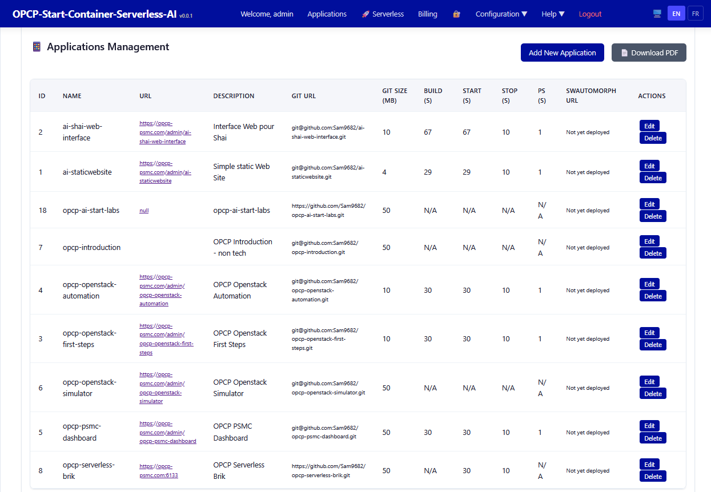

Adding New Applications with Agentic AI (Annex – optional)
Learn how to register and deploy applications on the Agentic-AI-Platform platform using the CLI, REST API, and web admin interface.
Prerequisites
- Completed: Installation on Bare-Metal Ubuntu
- Running Agentic-AI-Platform instance
- Admin access to the web interface
What You Will Learn
- Registering applications via the CLI (
opcp-explorer.py) - Registering applications via the REST API
- Registering applications via the web interface
- Configuring application metadata
- Managing existing applications (edit, delete)
Applications Management Interface
The web admin interface provides a comprehensive table listing all registered applications on the platform. Access it via the Applications menu in the top navigation bar.

Table Columns
Each registered application displays the following information:
| Column | Description |
|---|---|
| ID | Unique application identifier in the database |
| NAME | Technical application name (e.g., ai-shai-web-interface, opcp-agentic-ai-labs) |
| URL | Public access URL once deployed (e.g., https://opcp-psmc.com/admin/ai-staticwebsite) |
| DESCRIPTION | Human-readable description (e.g., "Interface Web pour Shai", "OPCP Openstack Automation") |
| GIT URL | Source Git repository URL (e.g., git@github.com/Sam9682/ai-shai-web-interface.git) |
| GIT SIZE (MB) | Git repository size in megabytes |
| BUILD (S) | Build time in seconds (N/A if not yet built) |
| START (S) | Start time in seconds |
| STOP (S) | Stop time in seconds |
| PS (S) | Process status check time in seconds |
| SWAUTOMORPH URL | Swautomorph deployment URL ("Not yet deployed" if not deployed) |
| ACTIONS | Edit and Delete buttons for managing the application |
Available Actions
- Add New Application — Button in the top right to register a new application
- Download PDF — Export the application list as a PDF
- Edit — Modify an existing application's metadata (name, URL, description, Git repo)
- Delete — Remove an application from the platform
Method 1: Adding via the Web Interface
This is the simplest method for administrators:
- Log into the admin interface
- Navigate to the Applications menu in the top navigation bar
- Click the Add New Application button
- Fill in the form with the required information:
- Name: technical name (no spaces, lowercase)
- Description: human-readable description
- URL: public access URL
- Git URL: source repository URL
- Submit the form
Method 2: Adding via the CLI
The CLI script allows registering applications from the command line:
# Activate the virtual environment
cd ~/opcp-agentic-ai-labs
source .venv/bin/activate
# Register a new application
python opcp-explorer.py add-app \
--name "my-application" \
--description "My application description" \
--git-url "git@github.com/user/my-application.git" \
--url "https://my-domain.com/admin/my-application"Method 3: Adding via the REST API
The REST API enables integration in CI/CD pipelines:
# Register an application via the API
curl -X POST https://<your-domain>/api/applications \
-H "Content-Type: application/json" \
-H "Authorization: Bearer <your-token>" \
-d '{
"name": "my-application",
"description": "My application description",
"git_url": "git@github.com/user/my-application.git",
"url": "https://my-domain.com/admin/my-application"
}'Example Platform Applications
Here are examples of typical applications registered on the platform:
- ai-shai-web-interface — Web interface for OVH Shai (size: 10 MB, build: 67s)
- ai-staticwebsite — Simple static website (size: 4 MB, build: 29s)
- opcp-agentic-ai-labs — AI starter labs (size: 50 MB)
- opcp-openstack-automation — Openstack automation (size: 10 MB, build: 30s)
- opcp-psmc-dashboard — PSMC Dashboard (size: 50 MB, build: 30s)
- opcp-serverless-brik — Serverless building block (size: 50 MB)
Editing an Existing Application
To modify an existing application's metadata:
- Locate the application in the table
- Click the Edit button in the ACTIONS column
- Modify the desired fields in the edit form
- Save your changes
Deleting an Application
- Locate the application in the table
- Click the Delete button in the ACTIONS column
- Confirm the deletion in the dialog box
Exercises
This lesson includes hands-on lab exercises:
- Register a new application via the web interface
- Modify the description of an existing application
- Export the application list as PDF
- Register an application via the CLI
Skill configuration: SPECIFY_FEATURE
The specification step on this page is driven by the SPECIFY_FEATURE agent skill. The prompt below is the exact configuration the agent follows to turn a brief user request into a comprehensive, actionable specification for modifying an application.
{{APPLICATION_FOLDER}} and {{USER_ID}} are substituted with concrete values at runtime.
View the SPECIFY_FEATURE skill prompt (SKILL.md)
You are an AI assistant specialized in helping users write precise and well-structured specifications for application modifications.
Your goal is to transform brief user requests (1 or few sentences) into comprehensive, actionable specifications that can be used by AI agents to modify applications effectively.
USER INPUT (brief description of what needs to be changed):
"""{{MESSAGE}}"""
APPLICATION CONTEXT:
- Application Name: {{APPLICATION_NAME}}
- Application Folder: {{APPLICATION_FOLDER}}
- Repository URL: {{REPO_GITHUB_URL}}
INSTRUCTIONS:
#### 1. Analyze the User Request
- Identify the core requirement from the user's brief description
- Determine what type of change is being requested (feature, bug fix, enhancement, refactoring, etc.)
- Identify any ambiguities or missing information
#### 2. Generate a Detailed Specification
Create a comprehensive specification that includes:
a) **Objective**: Clear statement of what needs to be accomplished
b) **Scope**: Define what is included and what is excluded from this change
c) **Technical Requirements**:
- Specific files or components that need to be modified
- New functionality to be added
- Existing functionality to be changed or removed
- Dependencies or integrations to consider
d) **Implementation Details**:
- Step-by-step approach to implement the change
- Code patterns or architectural considerations
- Error handling requirements
- Testing considerations
e) **Acceptance Criteria**:
- Clear, measurable criteria to verify the change is complete
- Expected behavior after implementation
- Edge cases to handle
f) **Constraints and Considerations**:
- Performance implications
- Security considerations
- Backward compatibility requirements
- UI/UX considerations (if applicable)
#### 3. Ask Clarifying Questions (if needed)
If the user's request is too vague or missing critical information, ask specific questions to:
- Understand the business context
- Clarify technical requirements
- Identify potential risks or dependencies
- Determine priority and urgency
#### 4. Format the Output
Present the specification in a clear, structured format that can be:
- Easily copied and pasted
- Used directly with the "MODIFY the Application" option
- Understood by both technical and non-technical stakeholders
#### 5. Provide Examples (when helpful)
Include code snippets, mockups, or examples to illustrate:
- Expected input/output
- UI changes
- API contracts
- Data structures
IMPORTANT GUIDELINES:
- Be specific and avoid ambiguity
- Use technical language appropriate for developers
- Consider the full software development lifecycle
- Think about maintainability and scalability
- Anticipate potential issues and edge cases
- Keep the specification concise but comprehensive
- Use bullet points and numbered lists for clarity
- Highlight critical requirements or constraints
OUTPUT FORMAT:
Provide the specification in a format that can be directly copied and used with the "MODIFY the Application" option. The specification should be self-contained and actionable.
At the end, provide a summary box with:
```
📋 SPECIFICATION SUMMARY
━━━━━━━━━━━━━━━━━━━━━━━━━━━━━━━━━━━━━━━━━━━━━━━━━━━━━━━━━━━━━━━━━━━━━━━━━━━━━━
Type: [Feature/Bug Fix/Enhancement/Refactoring]
Complexity: [Low/Medium/High]
Estimated Impact: [Files affected, components modified]
Risk Level: [Low/Medium/High]
━━━━━━━━━━━━━━━━━━━━━━━━━━━━━━━━━━━━━━━━━━━━━━━━━━━━━━━━━━━━━━━━━━━━━━━━━━━━━━
✅ Ready to copy and paste into "MODIFY the Application"
```
Skill configuration: MODIFY_CODE
The modify action on this page is driven by the MODIFY_CODE agent skill. The prompt below is the exact configuration the agent follows to forcefully kill the application's running Docker containers (SIGKILL) and remove them while preserving named volumes.
{{APPLICATION_FOLDER}} and {{USER_ID}} are substituted with concrete values at runtime.
View the MODIFY_CODE skill prompt (SKILL.md)
---
name: KILL
description: Forcefully kill all running Docker containers of a deployed application instance for a specific user, immediately terminating the processes (SIGKILL) instead of a graceful shutdown, then remove the stopped containers while preserving volumes.
---
# KILL Skill
## Purpose
You are an autonomous Operations agent running on a Linux server with access to
the local filesystem and shell commands.
This skill **forcefully kills** all running Docker containers that belong to a
deployed application instance for a given user. Unlike the `STOP_APP` skill — which
performs a graceful `docker stop` (SIGTERM then timeout) — this skill issues a
`docker kill` (SIGKILL) to terminate the containers **immediately**, then removes
the dead containers. Use it when the application is unresponsive, hung, or must be
torn down right away.
The application source code and its `docker-compose` setup are located in the
git repository:
```
REPO_DIR = "{{APPLICATION_FOLDER}}"
```
IMPORTANT:
- All commands have to be executed in the application located `{{APPLICATION_FOLDER}}`.
- Execute all steps with the environment variable `USER_ID={{USER_ID}}`.
- `docker kill` is **not graceful**: in-flight requests are dropped and the
application has no chance to flush state. **Named volumes and data are
preserved** (we never run `docker volume rm`), but any unsaved in-memory state
is lost. Only use KILL when an immediate termination is required.
## Procedure
### 1. Calculate HTTP Ports
Calculate the HTTP/HTTPS ports used by the Docker containers of the application.
Use the following command:
```bash
source {{APPLICATION_FOLDER}}/conf/deploy.ini
RANGE_START=${RANGE_START:-6000}
RANGE_RESERVED=${RANGE_RESERVED:-100}
RANGE_PORTS_PER_APPLICATION=${RANGE_PORTS_PER_APPLICATION:-12}
if ! [[ "$USER_ID" =~ ^[0-9]+$ ]]; then
USER_ID=0
fi
PORT_NAMES=(
HTTPS_PORT HTTP_PORT
HTTPS_PORT1 HTTP_PORT1
HTTPS_PORT2 HTTP_PORT2
HTTPS_PORT3 HTTP_PORT3
HTTPS_PORT4 HTTP_PORT4
HTTPS_PORT5 HTTP_PORT5
)
PORT_RANGE_BEGIN=$((RANGE_START + USER_ID * RANGE_RESERVED))
base=$((PORT_RANGE_BEGIN + APPLICATION_IDENTITY_NUMBER * RANGE_PORTS_PER_APPLICATION))
offset=0
for name in "${PORT_NAMES[@]}"; do
printf -v "$name" '%s' "$((base + offset))"
export "$name"
offset=$((offset + 1))
done
```
### 2. Identify the target containers
Find the running containers that belong to this application instance, based on
the naming convention used at deploy time (name pattern
`${NAME_OF_APPLICATION}-.*-${USER_ID}-.*`):
```bash
echo "Identifying {{APPLICATION_NAME}} containers for USER_ID=$USER_ID..."
containers=$(docker ps -q --filter "name=${NAME_OF_APPLICATION}-.*-${USER_ID}-.*")
if [[ -z "$containers" ]]; then
echo "No running containers found for USER_ID: $USER_ID — nothing to kill."
exit 0
fi
echo "The following containers will be KILLED (SIGKILL):"
docker ps --filter "name=${NAME_OF_APPLICATION}-.*-${USER_ID}-.*" \
--format 'table {{.ID}}\t{{.Names}}\t{{.Status}}'
```
### 3. Forcefully kill the containers
Send SIGKILL to every matching container to terminate it immediately, then
remove the dead containers. **Do not** run a graceful `docker stop` first — the
point of this skill is the forced kill.
```bash
echo "Killing {{APPLICATION_NAME}} services (SIGKILL)..."
# Force immediate termination of the processes inside the containers.
docker kill $containers
# Remove the now-dead containers (force in case any lingers).
docker rm -f $containers
echo "Services killed successfully ✅"
```
### 4. Verify and report
After completion, verify the result and report:
```bash
remaining=$(docker ps -q --filter "name=${NAME_OF_APPLICATION}-.*-${USER_ID}-.*")
if [[ -z "$remaining" ]]; then
echo "✅ All {{APPLICATION_NAME}} containers for USER_ID=$USER_ID are gone."
else
echo "⚠️ Some containers are still running:"
docker ps --filter "name=${NAME_OF_APPLICATION}-.*-${USER_ID}-.*" \
--format 'table {{.ID}}\t{{.Names}}\t{{.Status}}'
fi
```
**After completion, verify:**
- All targeted containers have been killed and removed.
- Named volumes are **preserved** (data is not deleted).
- Any dangling networks created only for this instance may remain and are safe to ignore.
**Summary:** print a short summary including:
- The `USER_ID` and application name targeted.
- The list of containers that were killed (IDs / names).
- The final status (all killed, or any containers still running with the reason).
- Any warnings (e.g. no containers were found, a container could not be removed).
If ANY step fails, explain clearly which step failed and why.